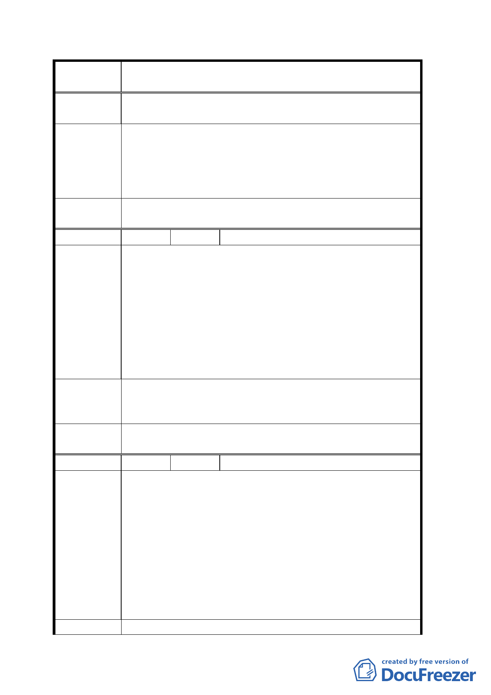

案
名
變更臺北市文山區萬隆段二小段瀝青拌合場用地及住宅區
（專案國宅用地）為學校用地計畫案
不分黨派亦激烈同表決策之粗糙、罔顧民意、誠信不
足。
復查文山區萬隆段土地「由住宅區、工業區、機關用地、
瀝青場、機關用地、專案國宅」，等先後變更六次，其拋棄
建 議 辦 法 都市計畫法，浪費國家資源與財力至巨。敬祈主辦單位依
法應「通盤檢討學校用地，選擇郊區建校」，則國家百姓兩
蒙其利。
擬建議處理
意見
同意撤回計畫案。
編 號 ５ 陳情人 劉枝昌
一、文山區萬隆段住宅區變更為文心中學用地一案，曾於
景興國中舉行說明會，由籌備主任接受本地居民建議
「通盤檢討市有學校用地評估後，再召開公聽會，詎
陳情理由
料失信於大眾，而獨斷專行」，逕移送都市發展局「公
開展覽三十天」，並未舉辦公聽會。
二、都市計畫法規定「住宅區、文教區、工業區，而不是
混合使用，然本段自五十九年由住宅區變更機關為瀝
青場，強行設廠後，民怨四起，恢復機關用地，又改
為國宅專區，顯然不遵都市計畫法甚明。
一、請依照都市計畫法選擇郊區設校，或借鏡高雄市瑞平
建議辦法
中學設在郊區，以維法律。
二、本區居民推派代表列席都市計畫審議。
擬建議處理
意見
同意撤回計畫案。
編 號 ６ 陳情人 余忠潔
一、教育局去年在志清國小舉行公聽會時，表示採納通盤
檢討市有學校用地或適合用地，選定兩、三處評估後，
再擴大舉行一次公聽會後始作決定，然教育局並未如
此作，就遽然擅自決定。
陳情理由
二、教育局曾邀請萬隆段代表去高雄市參觀「瑞平中學」，
一致讚賞其環境、設備新穎等，但其設置地點仍為人
煙稀少之地區，此重要因素被教育局忽略。
三、教育局未廣泛徵詢萬隆段附近居民的支持，即逕送都
發局，並利用「春節期間」以迅雷不及掩耳之方法完
成法定程序，便宜行事，矇騙百姓。
建 議 辦 法 一、教育局應先行檢討全市學校用地選擇二、三處舉行公
七